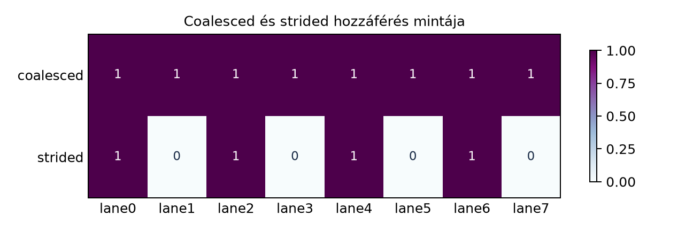

A globális memória a GPU legnagyobb késleltetésű, de legnagyobb kapacitású memóriatere. A benne tárolt adatok elérésekor a hardver nem minden thread kérését szolgálja ki egyenként, hanem a warp egészének memóriahozzáféréseit igyekszik összevonni. Ezt az összevonást nevezzük globális memória coalescingnek. A coalescing minősége közvetlenül meghatározza, hogy a kód milyen közel tud kerülni az elméleti memória-sávszélességhez. Ezért ez a fogalom az egyik legfontosabb teljesítménytényező a CUDA-programozásban.

Egy GPU-ban a végrehajtás alapegysége a warp: 32 szál egyszerre hajtja végre ugyanazt az utasítást, bár különböző adatokon (SIMT, Single Instruction Multiple Threads). Amikor egy warp memóriautasítást hajt végre – például globális memóriából olvas –, a hardver a 32 szál által kért címeket együtt vizsgálja. Ha ezek a címek bizonyos feltételeknek megfelelnek, a hardver összevonja a kéréseket: a 32 egyedi hozzáférés helyett néhány széles memóriatranzakciót indít. Ez a coalescing.
A memóriatranzakció fogalma kulcsfontosságú. A global memory a DRAM-ból és a hozzá tartozó gyorsítótár-hierarchiából (L2, L1) áll. A hardver nem bájtonként, hanem szektorokban és tranzakciókban mozgatja az adatokat. Egy szektor általában 32 bájt. Az L2 cache vonala 128 bájt, tehát négy darab 32 bájtos szektorból áll. Amikor egy warp memóriát olvas, a hardver annyi szektort kér le, amennyi az összes kért cím lefedéséhez szükséges. A kérés akkor optimális, ha minden lekérdezett 32 bájtos szektorból mind a 32 bájtot ténylegesen felhasználja legalább egy szál.
Például, ha egy warp 32 szálának mindegyike egy-egy
float (4 bájt) értéket olvas, és a címek szorosan egymás
után következnek, akkor a teljes kérés 128 bájt, azaz pontosan egy cache
line. Ideális esetben ezt a hardver egyetlen 128 bájtos tranzakcióval
(vagy néhány kisebb, de teljesen kihasznált tranzakcióval) kiszolgálja.
A gyakorlatban a hardver a kérést szektorokra bontja,
és minden szektort külön kér le. Ha minden szektorból minden bájtot
használunk, akkor a tranzakciók száma minimális, a sávszélesség
maximálisan kihasznált.
Ha azonban a szálak címei szétszórtak, például minden szál minden nyolcadik elemet olvassa, akkor a 32 kérés 32 különböző szektort érinthet. A hardver 32 szektort kénytelen lekérni, de mindegyikből csak 4 bájtot használ fel. Ez 32 × 32 bájt = 1024 bájt tényleges adatforgalom, miközben a hasznos adat csak 128 bájt. A hatékonyság 12,5%, a többi 87,5% elvész. Ez a nem coalescing hozzáférés tipikus következménye.
A memóriarendszer különböző méretű tranzakciókat hajthat végre. A szektor mérete 32 bájt, de a hardver a kérések összevonásakor gyakran nagyobb egységekben mozgatja az adatokat. A modern NVIDIA GPU-k a globális memória-hozzáféréseket jellemzően 32, 64 vagy 128 bájtos tranzakciókra bontják, attól függően, hogy a szálak milyen címtartományt fednek le.
float-ot
kérnek, az pontosan egy 128 bájtos cache line-t fed le. Ideális esetben
a hardver egyetlen 128 bájtos tranzakcióval kiszolgálja.A tranzakciók mérete nem merev szabály; a hardver a kérések alapján dönt. A lényeg: minél kevesebb tranzakció kell, és minél nagyobb ezek kihasználtsága, annál jobb a coalescing. A hatékonyságot a felhasznált hasznos adat és a ténylegesen átvitt adat arányával mérhetjük. Ideális esetben ez 100%.
A coalescing egyik kritikus feltétele a memóriacímek igazítása (alignment). A hardver akkor tudja a leghatékonyabban összevonni a kéréseket, ha a warp által kért memóriaterület kezdőcíme a tranzakció méretéhez igazodik. Például egy 128 bájtos olvasás akkor ideális, ha a kezdőcím 128-cal osztható. Ha a kezdőcím nem igazított, a kérés átnyúlik a cache line határon, és a hardver több tranzakciót kénytelen indítani.
Tekintsünk egy példát: egy warp 32 szálból áll, mindegyik egy
float-ot olvas. Ha a kezdőcím 128-cal osztható, akkor a 32
float pontosan egy cache line-t fed le, és egyetlen 128 bájtos
tranzakció kiszolgálja. Ha a kezdőcím viszont például 4-gyel osztható,
de 128-cal nem, akkor a 128 bájtos kérés két cache line határát érinti.
A hardver két 128 bájtos tranzakciót (vagy egy 128 bájtosat és egy 32
bájtosat) indít, és a kért adat csak a lekérdezett adat egy részét
foglalja el. Ez rontja a hatékonyságot.
A gyakorlatban az alignment akadályozhatja a tökéletes coalescinget.
A CUDA memóriafoglaló (cudaMalloc) által visszaadott
pointerek általában 256 bájtra igazítottak, így a kernelindításkor
gyakran jó kiindulópontot kapunk. Ha azonban a tömbön belül eltolással
dolgozunk, például &array[offset] címet adunk át, akkor
az alignment romolhat. Ezért fontos a tömbindexelésnél az igazítást
figyelembe venni.
A szektorok szintjén is van alignment: egy 32 bájtos szektor akkor használható ki teljesen, ha a kért adat a szektor egészét lefedi. Ha egy szektorból csak 4 bájtot kérünk, a szektor többi 28 bájtja feleslegesen kerül átvitelre. Ezért a coalescing akkor optimális, ha a szálak címei folytonosak, és a kezdőcím 32 bájtra (vagy nagyobb tranzakció esetén nagyobb méretre) igazodik.
A stride-olt hozzáférés a leggyakoribb példa a nem coalescing
hozzáférésre. Tegyük fel, hogy a szálak egy tömb elemeit olvassák, de
nem egymás után, hanem minden szál stride távolságra lévő
elemet. A kernelben az indexelés például így nézhet ki:
int idx = threadIdx.x + blockIdx.x * blockDim.x;
float value = input[idx * stride];Ha stride = 1, a szomszédos szálak szomszédos
float-okat olvasnak – ez a tökéletes coalescing esete. Ha
stride = 2, akkor minden második elemet olvassák, így 32
szál 64 float-nyi területet fed le, ami 256 bájt. Ez két
128 bájtos cache line-t érint, de minden cache line-ból csak minden
második 4 bájtos szegmenst használunk. A hatékonyság 50%-ra csökken.
stride = 8 esetén minden szál 32 bájtos távolságra van, így
minden szál külön szektort érint. A 32 szál 32 szektort kér le, de
mindegyikből csak 4 bájtot használ. A hatékonyság 12,5%, ahogy korábban
láttuk.
Minél nagyobb a stride, annál szétszórtabbak a címek, és annál több tranzakció kell. A teljesítményromlás drámai: a memória-sávszélesség kihasználtsága a stride reciprokával arányosan csökken, egészen addig, amíg minden szál külön tranzakciót kényszerít ki.
Érdemes megjegyezni, hogy a modern GPU-k némi cache-el rendelkeznek, ezért ha ugyanazt a stride-olt hozzáférést ismételten végrehajtjuk, a L2 cache enyhítheti a veszteséget. A laborban ezt mérni fogjuk.
A coalescing hatását legegyszerűbben egy memóriaművelet
sávszélességének mérésével lehet bemutatni. A labor célja, hogy
megmérjük egy egyszerű kernel – float tömb másolása –
effektív sávszélességét különböző stride értékek mellett. A várt
eredmény az, hogy stride = 1 esetén a sávszélesség közel
van a GPU elméleti maximumához, míg a stride növekedésével a
sávszélesség drámaian csökken.
Környezet rögzítése (a laborjelentésben kötelező kitölteni): - GPU modell: ______________________ (például: NVIDIA RTX 3080) - Compute capability: ______________________ (például: 8.6) - Driver verzió: ______________________ (például: 570.86) - CUDA toolkit verzió: ______________________ (például: 12.8) - Operációs rendszer: ______________________ (például: Ubuntu 24.04 LTS) - nvidia-smi által mutatott power limit: ______________________
Kód (CUDA C++17, coalescing.cu):
#include <cstdio>
#include <cstdlib>
#include <cuda_runtime.h>
#include <vector>
// Hibaellenőrző makró
#define CUDA_CHECK(call) do { \
cudaError_t err = (call); \
if (err != cudaSuccess) { \
fprintf(stderr, "CUDA hiba: %s fajl, %d sor: %s\n", \
__FILE__, __LINE__, cudaGetErrorString(err)); \
exit(EXIT_FAILURE); \
} \
} while (0)
// Kernel: minden thread a stride*idx indexű elemet másolja
__global__ void copyKernelStride(const float* __restrict__ src,
float* __restrict__ dst,
int n, int stride) {
int idx = blockIdx.x * blockDim.x + threadIdx.x;
int access_idx = idx * stride;
if (access_idx < n) {
dst[access_idx] = src[access_idx];
}
}
// Kernel: normál coalescing (stride = 1)
__global__ void copyKernelCoalesced(const float* __restrict__ src,
float* __restrict__ dst,
int n) {
int idx = blockIdx.x * blockDim.x + threadIdx.x;
if (idx < n) {
dst[idx] = src[idx];
}
}
int main(int argc, char** argv) {
if (argc != 2) {
fprintf(stderr, "Hasznalat: %s <stride>\n", argv[0]);
return EXIT_FAILURE;
}
int stride = atoi(argv[1]);
const int n = 1 << 23; // 8M float = 32 MB tömbönként
const size_t bytes = n * sizeof(float);
float *d_src, *d_dst;
CUDA_CHECK(cudaMalloc(&d_src, bytes));
CUDA_CHECK(cudaMalloc(&d_dst, bytes));
// Inicializálás host oldalon egyszerűen, aztán feltöltés device-ra
std::vector<float> h_src(n, 1.0f);
CUDA_CHECK(cudaMemcpy(d_src, h_src.data(), bytes, cudaMemcpyHostToDevice));
cudaEvent_t start, stop;
CUDA_CHECK(cudaEventCreate(&start));
CUDA_CHECK(cudaEventCreate(&stop));
// Grid/block konfiguráció
int blockSize = 256;
int gridSize = (n + blockSize - 1) / blockSize;
if (stride > 1) {
// A stride-olt kernel esetén a ténylegesen elért elemek száma: ceil(n / stride)
gridSize = ((n + stride - 1) / stride + blockSize - 1) / blockSize;
}
// Warm-up: 3 ismétlés, hogy a cache-ek és az órajel stabilizálódjanak
for (int i = 0; i < 3; ++i) {
if (stride == 1) {
copyKernelCoalesced<<<gridSize, blockSize>>>(d_src, d_dst, n);
} else {
copyKernelStride<<<gridSize, blockSize>>>(d_src, d_dst, n, stride);
}
}
CUDA_CHECK(cudaDeviceSynchronize());
CUDA_CHECK(cudaGetLastError());
// Mérés: 10 ismétlés
const int iterations = 10;
CUDA_CHECK(cudaEventRecord(start));
for (int i = 0; i < iterations; ++i) {
if (stride == 1) {
copyKernelCoalesced<<<gridSize, blockSize>>>(d_src, d_dst, n);
} else {
copyKernelStride<<<gridSize, blockSize>>>(d_src, d_dst, n, stride);
}
}
CUDA_CHECK(cudaEventRecord(stop));
CUDA_CHECK(cudaDeviceSynchronize());
CUDA_CHECK(cudaGetLastError());
float elapsed_ms = 0.0f;
CUDA_CHECK(cudaEventElapsedTime(&elapsed_ms, start, stop));
double elapsed_sec = elapsed_ms / 1000.0;
double total_bytes = 2.0 * bytes * iterations; // olvasás + írás, összes iteráció
double bandwidth = total_bytes / elapsed_sec; // bájt/másodperc
printf("Stride=%2d | Atlagos ido (ms/iter): %.6f | Effektiv savszelesseg: %.2f GB/s\n",
stride, elapsed_ms / iterations, bandwidth / 1e9);
CUDA_CHECK(cudaFree(d_src));
CUDA_CHECK(cudaFree(d_dst));
CUDA_CHECK(cudaEventDestroy(start));
CUDA_CHECK(cudaEventDestroy(stop));
return 0;
}Buildparancs (Linux, NVIDIA CUDA compiler):
nvcc -O3 -arch=sm_86 -o coalescing coalescing.cuA sm_86 a compute capability 8.6-hoz tartozik. A saját
GPU-nak megfelelő értéket kell használni, például sm_80
(A100), sm_89 (RTX 40xx) stb.
Futtatási parancs:
./coalescing 1
./coalescing 2
./coalescing 4
./coalescing 8
./coalescing 16
./coalescing 32A várt eredmény a memória-sávszélesség csökkenése a stride
növekedésével. stride = 1 esetén a kód tökéletes
coalescinget ér el, ezért a mért sávszélesség közel van a GPU elméleti
maximumához. A tömb mérete 32 MB, így a másolás során a teljes
adatforgalom 64 MB iterációnként, ami belefér az L2 cache-be, ezért a
mérés nem teljesen a DRAM-sávszélességet mutatja, hanem az L2
cache-sávszélességet. Ez is hasznos, mert a coalescing elsősorban a
tranzakciók számát befolyásolja. A stride növelésével a
tranzakciók száma nő, és a sávszélesség csökken. A várt trend:
stride = 1-nél maximum, stride = 2-nél kb.
fele, stride = 4-nél kb. negyede,
stride = 8-nál kb. 12,5% körüli érték, és így tovább. A
pontos értékek a GPU-tól és a cache viselkedésétől függnek, de a monoton
csökkenés egyértelmű.
A labor elvégzése után a hallgatónak rögzítenie kell a kimenetet, például táblázatban:
| Stride | Átlagos idő (ms/iter) | Effektív sávszélesség (GB/s) |
|---|---|---|
| 1 | ||
| 2 | ||
| 4 | ||
| 8 | ||
| 16 | ||
| 32 |
A mért értékeket össze kell vetni a várt trenddel. Ha nagy eltérés mutatkozik, érdemes ellenőrizni a kernel indexelését, a block- és gridméreteket, valamint azt, hogy a GPU-n volt-e más terhelés.
A globális memória coalescing a warp szintjén értelmezett fogalom: a hardver a 32 szál kéréseit próbálja összevonni, hogy minél kevesebb memóriatranzakciót kelljen indítania. A tranzakciók 32, 64 vagy 128 bájtos méretűek lehetnek, és az a cél, hogy minden lekérdezett szektorból a lehető legtöbb bájtot felhasználjuk. Az alignment biztosítja, hogy a kérések ne lógjanak át cache line határokon. A stride-olt hozzáférés a leggyakoribb anti-minta: minél nagyobb a stride, annál rosszabb a coalescing, és annál kisebb az effektív sávszélesség.
Önellenőrző kérdés: Egy warp 32 szálból áll, minden
szál egy float típusú értéket olvas globális memóriából. Az
alábbi indexelések közül melyik eredményez tökéletes coalescinget? (A
tömb float*, az index i a szál globális
azonosítója.)
tomb[i * 32]tomb[i * 2]tomb[i]tomb[(i % 32) * 1024]Magyarázza meg a választ a tranzakciók és szektorok szempontjából!
Ez az alfejezet lefektette a coalescing alapjait. A következő egységben a shared memory bankok és a bank conflictok témáját tárgyaljuk, amely a globális memória mellett a másik kritikus memóriateljesítmény-tényező.